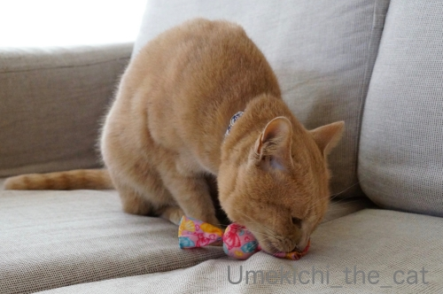
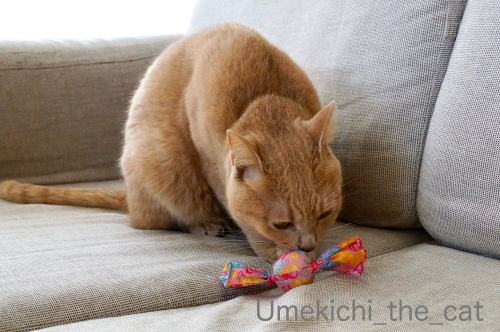
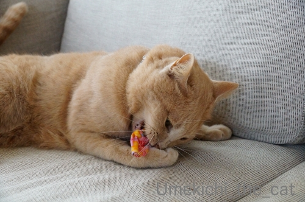
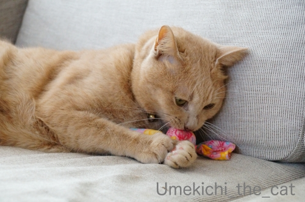
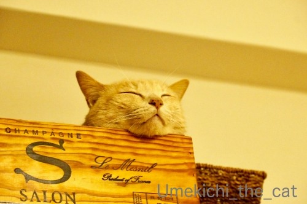

マタタビキャンディの嗜み方 [梅吉]

またたびキャンディはまず手を清め

かほりを楽しみ

そこから一気に

がぶ〜っと！

ポイントは両手でしっかりホールドすることのようです0(≧▽≦)0
こんな小さなものでもガブガブしながら蹴り倒すので
自分の顔まで蹴とばしてしまわないかと心配になるのですが・・・
上手いことちゃんと顔は避けているのですよねー。不思議です＾＾

遊び疲れての寝入り端。無防備な寝顔w
週末、ラグビートップリーグの試合を見に行ってきました！
＠万博記念競技場。
先週の天気予報では雨だったので諦めようかと思っていたのですが
天気が変わって雨は避けられました。
日頃の行いの良さのお陰でしょうか＾＾
この時期としては気温も高めで風もなく試合観戦日和？
でもやっぱり寒いよね、って思われる方も多いと思いますがしっかり防寒していけば大丈夫。
長めのコート、首回りの防寒は必須。
お尻の下に敷くブランケット＆ひざ掛けがあると最強です。
暑くて日差しの強い季節よりも
冬の方がスポーツ観戦には向いているんじゃないかと思う今日この頃。
試合はなかなか豪華な顔ぶれでした。
背中を向けてますが７番は我らが日本代表のラブスカフニ選手。
⑧の選手は皆さんご存知昨年のラグビーワールドカップ日本大会で優勝した
南アフリカ代表のNo.８フェルミューレン選手、「世界のフェル様」です＾＾
⑫の選手は2015年ワールドカップイングランド大会（南アフリカに勝利したあの大会）
の主力選手だった立川選手。
（2019年大会では残念ならが最終選考で日本代表から外れちゃいましたが。）
10番は2015年ワールドカップ、ワラビーズ準優勝に貢献した
元オーストラリア代表のスタンドオフ、フォーリー選手です。
そのフォーリー選手のトライ！
ヨガに三角のポーズってあるんですがそれみたいでかっこいい！！
フォーリー選手はキックもすごいよ0(≧▽≦)0
安定のコンバージョンキックをビシバシと決めてくれました。
ノーサイド。
トップリーグは勝ち負けよりも純粋にプレーを楽しむ感じでしょうか。
やっぱりラグビーのスタンド観戦は楽しい！
この日の試合はサンリオとのコラボ（笑）だったのです。
抽選でこのラグビーボールを当てる気満々だったのですが、はずれちゃったw
ちなみに大きさは公式球の三分の一くらいの大きさだったかな。
umeki_chiiRT @Kubota_Spears: ハローキティDAYまであと8日！！ 1月25日(土)の試合はハローキティDAY！ #ご当地キティmeetsクボタスピアーズ にご注目！ 試合当日はこちらのハッシュタグを使うといいことがあるかも？ 詳細は来週公開するNTTcom戦ファンサー…01/26 16:25
世界のフェル様、お茶目な方でキティちゃんコスもしてくれてましたw
なんて良い人なんだー！！

カフェオレ色の梅吉

梅吉 2023年8月10日 永眠


梅吉と出会った譲渡会

犬猫の理由なき殺処分ゼロ
妄想広告
UMEKICHI 光

爆発的に早い！
時々攻撃的！
Thanks to Mr.Boss365
爆発的に早い！
時々攻撃的！
Thanks to Mr.Boss365

梅吉さん上手にマタタビキャンディを扱っていますね。
うちではみんなで辺り一面ヨダレだらけにしちゃうので困ります。
「キティちゃんコス」サービス精神は立派ですが似合ってませんね。アブナイ人に見えます。
by zombiekong (2020-01-27 00:28)
まず手とソファーを楽しんでるのがちょっとウケます(笑)
からのまたたびキャンディー本体をメインディッシュ並みにガブリ！
もう誰も邪魔出来ないゾーンに入っちゃってますね♪
ラグビー南アフリカ代表というと金髪ロン毛野郎しか知りませんが、
これから「フェル様」に注目してみたいと思います(^_-)-☆
by yamatonosuke (2020-01-27 02:17)
最初に手を清めるのはお参りする時と同じですね＾＾
by ぽちの輔 (2020-01-27 06:16)
梅吉さん、至福の表情ですね。
by ニコニコファイト (2020-01-27 07:07)
梅吉さん、マタタビキャンディー堪能されましたねぇ＾＾
こんなに小さいキャンディーでも、ニャンコって上手に
遊び倒しますよねぇ( ^ω^ )
うちのでかいニャンコも自分を蹴らずにラリラリしてますw
by ニッキー (2020-01-27 07:43)
ラグビー生観戦！！！
いいなぁ～。やっぱりスポーツの生は臨場感あって大好きです。
by よーちゃん (2020-01-27 07:50)
梅吉さん！ちゃんと手を清めてからのガブリですね(#^.^#)
堪能した後の寝顔は可愛過ぎますね♪
by きぃ (2020-01-27 07:59)
実家のミイちゃんに、マタタビキャンディあげたら、ガブガブしながらよだれでベチャベチャになっちゃって(^^;)
梅吉さんは、手を清め、香りを楽しんでって、なにやら品の良い楽しみ方ですねえx。最終的にはケリケリになっちゃっても^m^
ラグビーやサッカー、冬の屋外スポーツは寒そうですが、夏よりマシ‥‥なのかなぁ。友達はアイスホッケーにハマってましたが、これがまたさらに寒いそうで。私は無理ーーー！(笑)
by ChatBleu (2020-01-27 08:39)
またたびキャンディ、すっかりお気に入りなのですねぇ^^
いやー、これはまじ、いいおもちゃだよ！(笑)
うちの子も大好きだものｗｗ
今年も買い置きして、猫友のおうちにいくときのお土産にしますわ^^
いまのところ、みんな喜んでくれてる！
by リュカ (2020-01-27 10:02)
梅吉さんマタタビキャンディーに夢中って感じでしょうか？
トップリーグも観戦者が増えていますね(^^)
by ma2ma2 (2020-01-27 10:37)
またたびキャンディの遊び方、梅吉さん流のお作法があるのですね^^
ウチのも噛んだあと蹴るのですが、自分の顎まで蹴り飛ばさないかひやひやしながら見ています^^;
キャンディよりも大きいミネットの方が蹴りやすくて好きみたい。
トップリーグはテレビ中継が増えて嬉しいです♪
「にわか」卒業をめざし昨日も神戸製鋼vsサントリーをテレビ観戦(#^^#)
真夏は日焼けと虫刺されが嫌だけどビールはうまい。
真冬はその心配はないけれど雪など降られたら我慢の限界をこえる。
悩ましいところです( ;∀;)
by ゆきち (2020-01-27 12:19)
マタタビキャンディ まいう～
喰わないか（ﾟ□ﾟ）
ラグビー盛り上がってるね。
私んちの直ぐ近くに東芝ブレイブルーパスがあるけど試合は見た事ありませんw
リーチマイケル選手は、私と同じ府中市民でした（ﾟ□ﾟ）
そんな事も最近知ったばかりですw
by 英ちゃん (2020-01-27 13:00)
こんにちは。
梅吉君、爽やかな光の中で・・・
マタタビキャンディと戯れる風景、素敵な写真です！！ちぃさん撮影？
「がぶ〜っと！」とした後は固まっている感じかな？（笑）
またたびキャンディ、撮影には良さそうですね。購入リスト入りです。
万博記念競技場でのトップリーグ観戦良いですね。
小生は、まともにテレビ視聴・観戦も出来ていない状況です。
フェルミューレン選手！！世界レベルの突破力とタックルです。
ラスト写真を見ると・・・
激しいプレーと変わりキティを目撃した感じですね（笑）！？(=^･ｪ･^=)
by Boss365 (2020-01-27 13:20)
またたびキャンディは見た目もかわいいし
優れモノですよねd(*￣∇￣)
だんだんカホリがしなくなるのか、そのうち
見向きもされなくなってしまうのが悲しいです＾＾
梅ちゃんのたしなみ方、ちゃんとお作法に則っている
感じでお上品ですっ(≧∀≦)
キティコスーーーｗお茶目でステキ❤
そういえば、キティちゃんに変身セット我が家にあります(笑)
白猫さんだとバッチリかもしれませんけどねー。
by カトリーヌ (2020-01-27 14:10)
梅吉さん、マタタビキャンディの正しい嗜み方のレクチャーありがとう♪
これならキャンディの部分が大量のよだれを吸い取ってくれるかしら？
うちはマタタビの小枝を進呈するので床がヨダヨダです(;^_^A
ラグビー、お天気回復して良かった。
2015年のW杯のころはまったくラグビーには興味もなかったです。
やはり開催国ともなると一気にその認知度はアップするものなんですね(^^
キティーちゃんとのコラボ 屈強なボディに可愛すぎるコラボがギャップ萌え
ということになるのでしょうかｗｗ
by marimo (2020-01-27 15:52)
梅吉さん、両手でしっかりホールドして、
真剣な顔ですね（笑）
ラグビーの試合、
娘が2月の末に観戦するようです。
防寒着のこと伝えておきますm(_ _)m
Bossさん、ちぃさん撮影って分かるのですね。
個性が出るのでしょうね。
凄いです。
私は写真の趣味がないので、
皆さん素敵に撮られていると、いつも感心しているだけです。
by kiki (2020-01-27 21:25)
梅吉さん、またたびキャンディに夢中ですね！
夢中になるのはいいことだと思います。
寝顔、「至福のひと時」って感じでいい感じ♪
この時期、屋外の観戦は大変ですね。
体調崩されないよう。
by yes_hama (2020-01-27 21:51)
また旅ですね。
違った、マタタビですね。
今度試してみます＾＾
by riverwalk (2020-01-27 23:27)
梅吉君、お気に入りで楽しんでるんですね～
そういえば年末に体調不良になって
らいむにマタタビキャンディーを頼んであげるのを
すっかり忘れていました（＞＜）
せっかく教えていただいてるのに・・・
by 藤並 香衣 (2020-01-27 23:49)
マタタビは喜びますね。
うちの猫はマタタビの木（小枝）が好きで、かぶりついてました。
by kou (2020-01-28 12:31)
クボタVSNコムですね？
そっか、クボタの地元民でしたね。
ラグビー観戦は寒いので、風邪を引かないようにね。
by じゅらまろ (2020-01-28 16:33)
マタタビキャンディの魅力威力？
梅吉クンって コメントを見ると 上品なのですね。
by サンダーソニア (2020-01-29 12:44)
マタタビキャンディ、カラフルで可愛いですね～。
梅吉さん、みごとなたしなみ方で味わい尽くしてますね！
ラグビーはフィギュアスケートが始まったら忙しくて、ころっと忘れてましたが～見ると思い出します。
友人がラグビー協会にいるので、盛り上がりが安定すればいいなと思ってます^^
by sana (2020-01-29 15:54)
梅吉さん、夢中ですね。またたび、すごいな。
ラグビー観戦いいなあ。一生で観たことないので一度行ってみたいです～
by liang (2020-01-29 17:35)
キティちゃんコスかわいいなぁ。
ラグビー、見るの楽しいですよね。
私も生でみてみたい。
by ふにゃいの (2020-01-29 21:14)